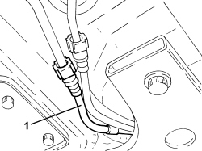
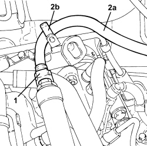

1040B54 FRONT FUEL RETURN PIPE - R.R
- Path
- Procedures > 10 ENGINE > 1040 FUEL TANK AND PIPES > 1040B FUEL SUPPLY/RETURN CIRCUIT PIPE > 1040B54 FRONT FUEL RETURN PIPE - R.R
- Kind
- repair procedure (removal / refitting; the operation number is the code)
- Applies to
- engines: 2.4 JTD 20v; all production periods
- Interactive page
- https://sloeber94.github.io/elrnDB-aBrrSpdr/en/#/946002965
Applies to: engines: 2.4 JTD 20v; all production periods
 Removing
Removing
 Refitting
Refitting- Position the vehicle on a lift.
Op. 1016A10 SOUND-PROOFING COVER - R.R
1. Disconnect the rapid connector for the front fuel supply pipe, rear fuel supply pipe side.

Applies to: engines: 2.4 JTD 20v; all production periods
1. Disconnect the rapid connector for the front fuel return pipe, fuel return manifold side.
2. Remove the front fuel return pipe (2a) after releasing from the retaining bands (2b).

Applies to: engines: 2.4 JTD 20v; all production periods
Refitting
Removing- Place the front fuel return pipe in its housing and secure it using the bands.
- Connect the rapid connector for the front fuel return pipe, fuel return manifold side.
- Connect the rapid connector for the front fuel return pipe, rear fuel return pipe side.
Op. 1016A10 SOUND-PROOFING COVER - R.R
- Remove the vehicle from the lift.